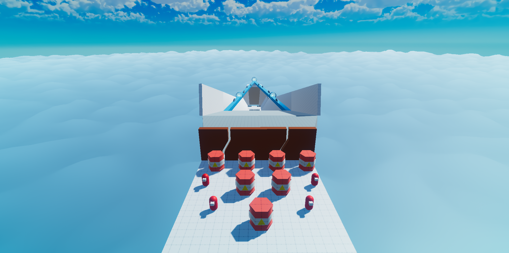
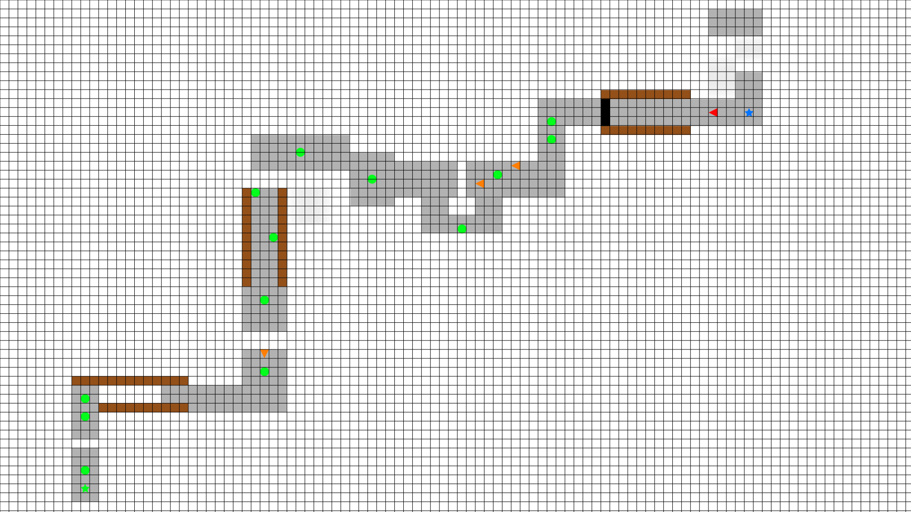
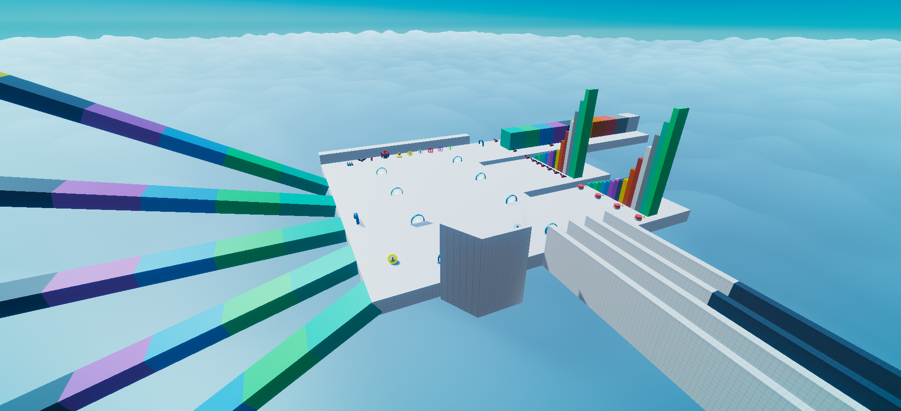
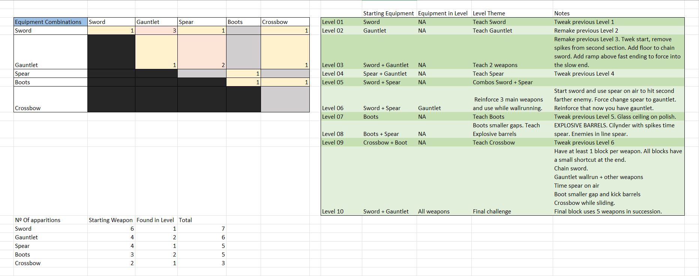
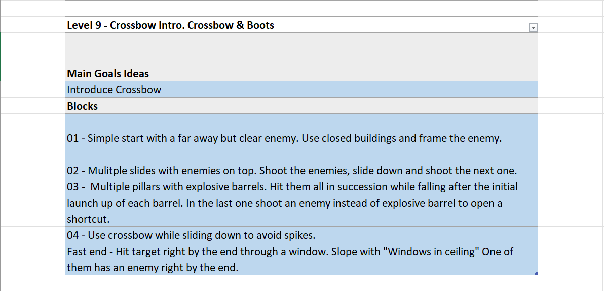
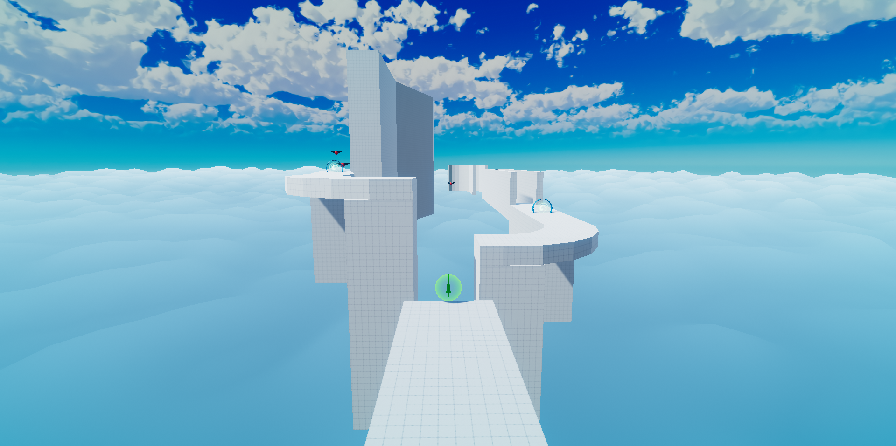

GAME & LEVEL DESIGN

This is a small prototype I’ve been working on for the last few weeks. On this page, I will focus on the level design process.
The goal of the project was to create a small prototype that focuses on movement mechanics, the visuals were secondary as I wanted to focus on the gameplay. I spent around a month working on the project. If you are interested in the gameplay design process, I wrote a devlog here but just in case here's a summary of the game:
Game SummaryHere's a Youtube video showcasing the final level and the itchio link
From the very beginning I tried to keep a very iterative process. Both the game and the design process changed through out the development quite a bit, we can divide these changes in 3 different stages:
At this point, there were some things already decided but I was still figuring how the game will end up working so I was still testing some of the mechanics and even the main gameplay loop.
Originally the game was going to focus a lot more on a puzzle like approach. The players would need to pick resources to use skills and they would need to manage and properly use those skills at the right moment to find the fastest path. This basically meant that the paths the player could take were very restrictive. During this stage I started by doing the design levels on Inkscape using a grid to keep consistency and respect the current metrics.
At this point I had 4 levels showing 3 weapons.

2D Layout of one of the old levels
After doing some playtests the game changed a lot. I removed one of the weapons and moved away from the puzzle aspect of the game focusing exclusively on the movement and use of skills. I wanted to give players more freedom to express themselves and create their own paths.
During my previous design sessions I noticed certain patterns and ideas that I kept using so I decided to stablish a level design philosophy for this project:
These “rules” gave me a structure to help me create new levels faster while making sure that I was respecting and reinforcing the main pillars of the game. Thinking in sections also helped me come up with small gameplay concepts that may not fit in the current level I was working on, but could be explored in a future level.

Level used for testing with specific areas to test height, forward distance, slopes, wallrun…
At this point I had 5 completely new levels showcasing the 6 weapons.
After a second round of playtest things were looking a lot better than the last time. The current levels needed some tweaks (and in some cases to be redone) but that was to be expected after the game changing so much. I was basically ready to move into “production”
Before actually getting back in the editor I moved to excel and did a plan of all the levels that the game was going to have and the focus of each level. I also took the time to see how many times each weapon was used and the combinations with other weapons. Originally I aimed to have 15 levels but finally decided to only do 10. This meant that the progression between weapons would be more abrupt and the crossbow wouldn't have a lot of game time but it would make the whole game more compact and give me enough time to properly fix the playtested levels.

Weapon Combination & Level Progression
I also changed my approach when designing the levels. Previously I was using Inkscape to design the levels but I found that this approach wasn’t really effective. Most of the times, when I moved into the editor, the level layout kept the original idea but ended up changing drastically due to iteration and tweaks.
To help me maintain a fast workflow, I did the level preproduction only using text. Using my level structure I described each level’s main goal, equipment, and different sections and use this as a base to build the level. This allowed me to quickly test things in editor while making sure that I was focusing on the important things.

Level 9 Breakdown
Overall I'm pretty satisfied with how the project ended up being. My biggest regret is not having time to properly playtest the last batch of levels. Right now there are some levels that even without testing them I know they are a bit too hard.
This is mainly due to the fact that I reduced the number of levels and tried to squeeze everything which is probably too much to handle at once. The moment I reduced the number of levels I reduced the scope by leaving some already implemented mechanics out but in retrospective I could've make some of the levels a bit simpler.
These issues came mainly from the fact that I had to change the game in a somewhat drastic way but I don't regret that change. Games are an iterative proccess and through playtesting and design I changed and removed what didn't fit in order to achieve the experience I was aiming for. In any case, I’m glad that I finally could work on a project focused around movement and speed which has been on my mind for a really long time. I will definitely come back to this kind of game in the future and try a different approach.

Level 7 Screenshot